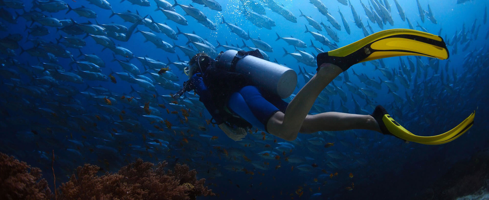

Location
contact us

location_on Address
Datag, Maribago, Lapu-Lapu City, Cebu, Philippines
local_phone Tel
+82 10 3553 6290
+61 995 411 3191
070 8625 6290(국내용)
local_phone 카카오톡
jcebu, enjoycebu1
location_on Address
Datag, Maribago, Lapu-Lapu City, Cebu, Philippines
local_phone Tel
+82 10 3553 6290
+61 995 411 3191
070 8625 6290(국내용)
local_phone 카카오톡
jcebu, enjoycebu1